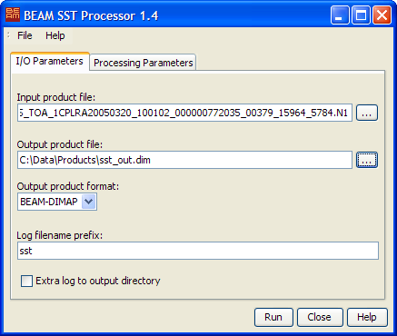
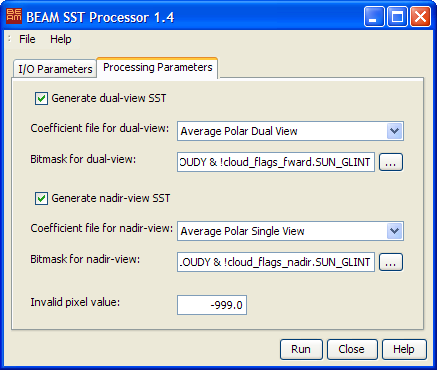

The SST In- and Output Parameters tab
Please note: The chapter BEAM Scientific Data Processors
provides a general description for all BEAM data processors. It describes the common graphical user interface (GUI),
the command-line interface and the common processing request file format.

- Input product file: Select the input product file by either typing
the product path into the text field or by pressing the file selection button
 to invoke a
standard file dialog.
to invoke a
standard file dialog.
- Output product file: Select the output product file by either typing
the product path into the text field or by pressing the file selection button
to invoke a
standard file dialog.
- Output product format: Select one of the available output product
formats.
The SST Processing Parameters tab

- Generate dual-view SST: Select whether to process the dual view SST
or not.
- Dual-view coefficient file:
Select one of the available coefficient sets for dual view processing.
The list shows the description strings of all coefficient files available.
- Dual-view mask: Specify a mask expression to be checked
during dual view processing. You can either type the expression manually to
the text field or use the bitmask expression editor by pressing the edit button
to the right.
- Generate nadir-view SST: Select whether to process the nadir view
SST or not.
- Nadir-view coefficient file:
Select one of the available coefficient sets for nadir view processing.
The list shows the description strings of all coefficient files available.
- Nadir-view mask: Specify a mask expression to be checked
during nadir view processing. You can either type the expression manually
to the text field or use the bitmask expression editor by pressing the edit
button to the
right.
- Invalid SST value:
Specify the value to be written to the output when the processor detects an
invalid condition (either by the pixel being masked out or by a processing
failure e.g division by zero).